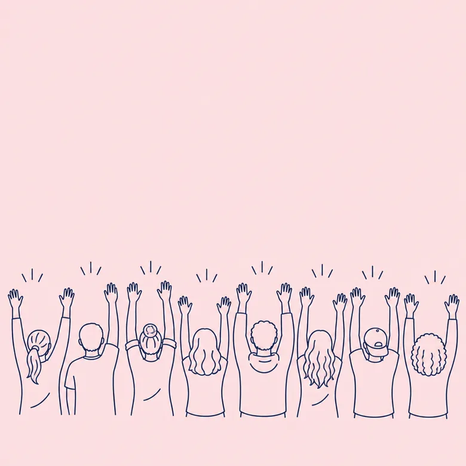

働き方座談会Talk
分野も入社年も違う4人に、休み方や冬の働き方について話してもらいました。
- K.S.電車線／2016年入社
- A.N.信号通信／2021年入社
- Y.K.建築電気／2014年入社
- R.H.電車線／2023年入社
夜間作業のある週は、
どう過ごしている？
R.H.入社前はいちばん心配していたところです。でも、夜に作業した翌日は必ず休息日なので、思っていたより生活のリズムは崩れませんでした。
K.S.班長としては、夜間の前の日に無理な予定を入れないようにしているね。昼のうちに段取りが終わっていれば、夜は落ち着いて作業できる。
Y.K.建築電気は駅が開いている時間の作業もあるので、昼と夜が半々くらい。子どもの行事がある週は、前もって相談すれば工程を組み替えてもらえます。
冬の北陸、雪の日の仕事は？
A.N.大雪の予報が出ると、各拠点で待機の当番を組みます。当番は持ち回りで、待機した分の手当も出ます。
K.S.朝いちばんの電車が無事に動くと、やっぱりほっとする。冬を一度越えると、仕事の見え方が変わるよ。
これから入る人に、ひとこと。
Y.K.わからないことを、わからないと言える職場です。聞かれて嫌な顔をする先輩はいません。
A.N.私も電気はほとんど知らずに入りました。研修で同期と一緒に覚えていけるので、安心して来てください。
社員アンケートVoice

2026年2月に全社員を対象に行った社内アンケートの結果から抜粋しました（回答412名）。「そう思う」「ややそう思う」と答えた人の割合です。
- 「夜間作業のあとの休息日は、遠慮なく休める雰囲気がある」（電車線・20代）
- 「資格の勉強会を先輩が自主的に開いてくれる」（信号通信・20代）
- 「繁忙期は休みの調整が難しいこともある。そのぶん閑散期にまとめて取っている」（変電・40代）
研修制度Training
電気の知識は、
入社してから身につければいい。
新入社員はまず3か月間、本社の研修棟で学びます。電気の基礎、安全の決まりごと、工具の扱いから始め、実際の架線や信号設備を使った実習で手を動かして覚えます。現場に出てからも、1人の新人に1人の先輩がつき、2年間かけて一人前を目指します。
- 1年目
新入社員研修
4月〜6月の3か月。座学と研修棟での実習。7月に各分野へ配属。
- 1〜2年目
先輩とペアでOJT
担当の先輩と同じ現場に入り、毎月の面談で進み具合を確かめます。
- 3〜5年目
作業の責任者へ
小さな工事の責任者を任され、施工管理の研修を受けます。
- 6年目〜
班長・主任へ
班をまとめる立場へ。後輩の指導役も担います。
資格の取得を後押しします
電気工事士、電気工事施工管理技士、電気主任技術者など、仕事に関わる資格の受験費用と講習費用は会社が負担します。合格した資格には月々の資格手当を支給します。
福利厚生・休日Benefits
休日・休暇
年間休日121日（週休2日制）。工事の日程で土日に出勤した場合は振替休日。夏季休暇・年末年始休暇・慶弔休暇・年次有給休暇。
夜間作業のあと
夜間作業の翌日は休息日。深夜の時間帯には法定の割増賃金に加え、夜間作業手当を支給します。
子育て・介護
産前産後休業、育児休業、介護休業。子どもが小学校を卒業するまでは短時間勤務を選べます。
住まい
金沢・富山・長野に独身寮あり（月額1万5,000円）。賃貸住宅に住む社員には住宅手当を支給します。
手当
通勤手当、家族手当、資格手当、夜間作業手当、雪害待機手当、時間外手当（全額支給）。
そのほか
社会保険完備、退職金制度、財形貯蓄、年1回の健康診断と夜間作業従事者の追加健診、社員旅行（任意参加）。